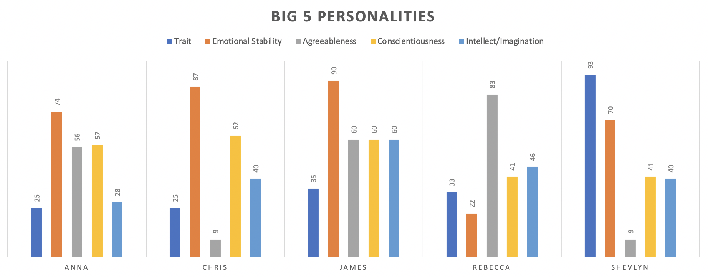
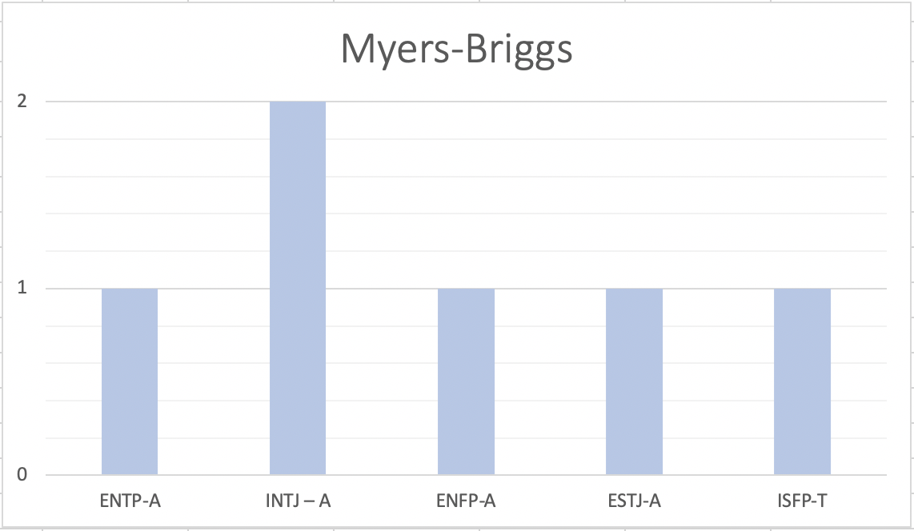
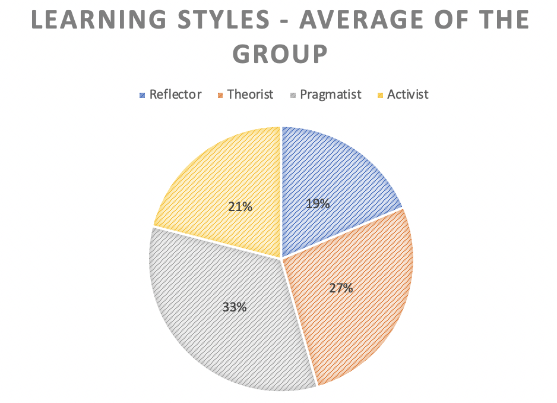

A short bio on each member of the team, including our interest in I.T., along with links to our individual GitHub pages.
Anna Lee - I am Melbourne born and bred, but I am of Chinese heritage. Before Covid stopped the world, I was a Marketing Manager for a hospitality group, of which I really loved doing because of my passion for food and wine. With plenty of unforeseen spare time up my sleeve due to the pandemic, I have been keeping myself busy reading (definitely want to learn more about Cosmology in particular), knitting (currently attempting a sweater), going for bike rides (damn you steep inclines!) and learning the basics of HTML/CSS. After having some time on my hands this year, I started learning HTML/CSS basics and really found myself enjoying it. This sparked an idea to take my learning to a more formal setting, which is how I got into this course. I’m very excited to see what potential this can bring, both personally and professionally! Student ID: s3875109
*
Christopher Grant - I am a 38-year-old male born in Melbourne, Australia. I left high school after Year 10 to work full time in the retail industry. I have a cert. II in Retail Operations and have completed a few introductory short courses in programming including Python & SQL. I am currently an Operations Manager in a printing & point of sale company in Melbourne’s SE. In my spare time, I like to get outside and go for a hike, snowboard or even just take my dogs for a walk. The interest I have in IT comes from my childhood, specifically my father. For many years my father would show me the basics of tinkering with electronics, how to read wiring diagrams, and we would often design, create and build small projects using components like 555 timers, etc. During my studies at RMIT, I expect to learn how to undertake tasks like web design, data management and analyses, software development and cloud computing to help further my career. Student ID: s3879459
*
James Greig - I was born in New Zealand, now living in Perth, WA. I was previously studying Bachelor of Applied Sciences at RMIT and am looking at transferring to Bachelor of IT, so I am doing two units this semester to test the waters. So far I am very much enjoying it. My interests are varied – permaculture, brewing/distilling, philosophy, guitar, martial arts. I live with my beautiful partner, my stepdaughter, our dog, 3 cats, and 2 pink and grey galahs. My particular interests in IT are Programming and Cybersecurity. Cybersecurity is probably the greatest of these interests. I chose RMIT because it has a good reputation for IT, and also it was the best option available via Open Universities Australia. I expect to learn through this degree (and probably Graduate Certificates/Masters ) a skill set that will give me access to work in the IT industry, working in Cyber Security. Student ID: s3804106
*
Michelle May - I am a proud Australian Aboriginal woman. I have a Diploma of Project Management and have studied linguistics and philosophy. I have worked primarily in the digital space beginning with website and intranet management. I have moved onto working with businesses in projects and change management roles to identify and bring to life digital opportunities. I usually act as the intermediary between IT and the business. My interest in IT resonates with making services, especially government, easier, cheaper and better for ordinary people. I believe technology benefits should be available to everyone. I have a special interest in human centred design and the Digital Service Standard. I chose RMIT as it has a strong reputation as a university for Information Technology studies, studying through OUA for flexibility. I expect my studies to lead to a better understanding of different specialist roles and services to communicate and use them better to build valuable and robust services. Student ID: s3879582
*
Rebecca Daimol - I am a Papua New Guinean living in South Australia with my partner and children. I speak English and New Guinea Pidgin but also understand the language native to my Mother’s island home; PNG itself has over 850 different languages. I grew up and eventually worked on Lihir Island, which is 3 degrees south of the equator. Lihir hosts a gold mining operation in a dormant volcano and operations face the challenge of working with geothermal activity. My decision to pursue IT was influenced by my experience during the peak of COVID19 in cases in South Australia in April 2020. I home-schooled my children for a month and realised that even my primary school-aged children have a dependency on IT. This sparked my interest in the industry and prompted me to consider their security. Through this degree pathway, I expect to develop the theoretical knowledge and practical experience necessary to begin a career in the IT industry. I look forward to the insights into Information Technology that make it the ever-evolving phenomena that it is. There is also an emphasis on communications and social interactions, that reminds us of the human component, I believe this will prepare me for the professional environment. Student ID: s3875198
*
Shevlyn Maharaj - I am a Fijian Indian. I have completed Year 10, currently halfway through year 11 but I have enrolled in University. An interesting fact is that I do MMA, Muay This and Boxing. I also have a 1 year old German Shepherd. Growing up in this day and age, I have been exposed to information technology on a daily basis in some way, which lead me to solve virtual technology related problems in my surroundings and therefore always having interest in IT. Although, I have not yet decided on a specific desired job, working alongside government agencies as well as having other IT jobs definitely interests me. Student ID: s3871451
For an indepth analysis of our individual three personality test results, we encourage you to visit our individual GitHub pages.
The analysis below will be based on us as a group, and how our personality traits affect our ability to work collaboratively together.
.
.
The results were interesting to see for the three personality tests, especially having two INTJ-A (Myers-Briggs) members! What are the chances?
What’s great to see though, is that our group has a great mix of all personality traits. With the Myers-Briggs test results - of the six members, there are four extroverts vs. two introverts; four intuitive vs. two observant; four thinking vs. two feeling; three prospective vs. three judging. The only notable difference was having five assertive personality traits compared to one turbulent.
It’s good to see that we are not leaning too one way over the other, so we can all bring different styles of thinking and communicating. This can only be a positive within our group dynamic, as we see this as a very well rounded group!
.
An interesting way to present the Learning Styles data of our group, was to show what the average of our results were for this test. Overall, when averaging out our scores, the group learns predominantly through a Pragmatic style. Almost all members, except for one, rated highest in a Pragmatic learning style, at an average of 33%.
This will mean the group will primarily learn in a practical fashion, preferring to put into practice the tasks at hand, over visualising abstract concepts and ideas. Lengthy discussions and debates will likely result in us losing focus or concentration, which means that the group as a whole will make quick decisions and get to work, which is fantastic for a group project.
The lowest average was in the Reflector learning style, with an average of 19%. Reflector learning style has a penchant for taking a step back and observing, with a cautious approaching to learning. Whilst it may sound counterproductive for a group project on limiting timing, as a group we have to be careful that we don't miss any vital details or forget the bigger picture through our haste.
© Untitled. All rights reserved. | Design by TEMPLATED.